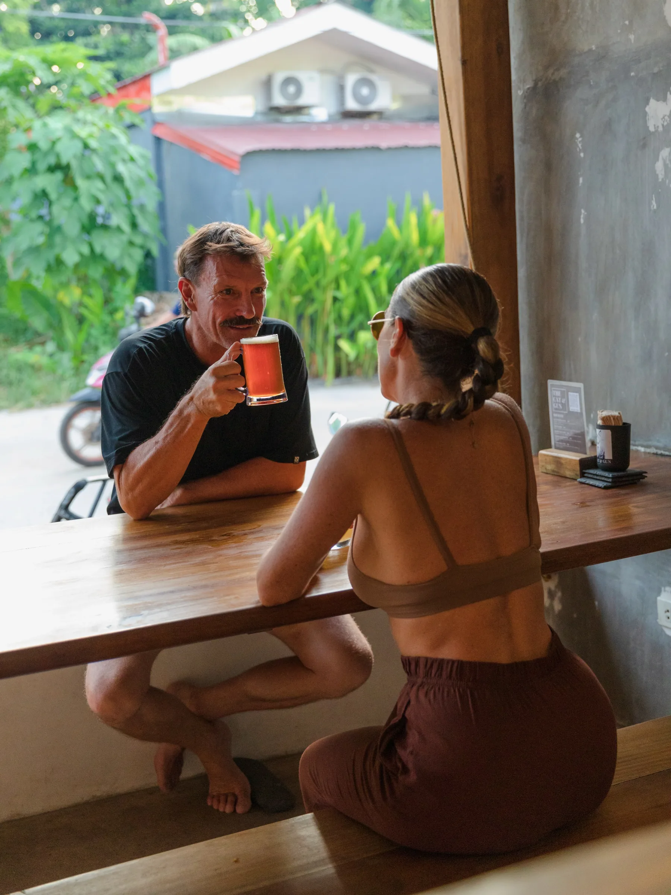
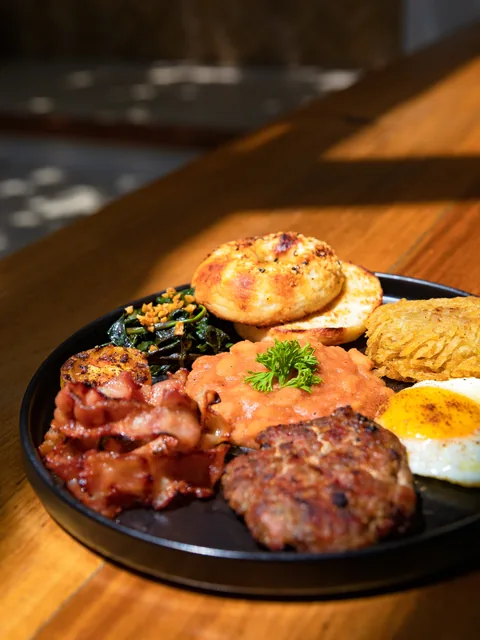
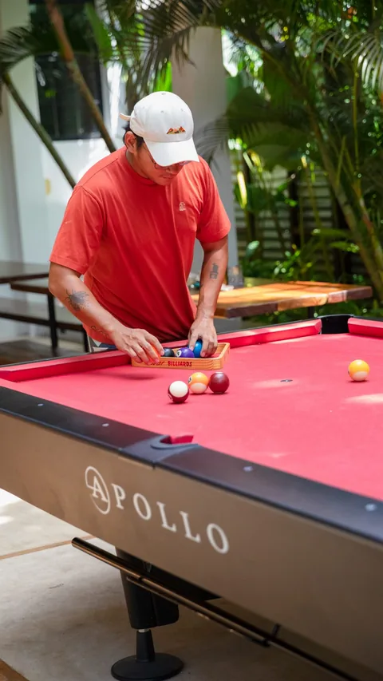
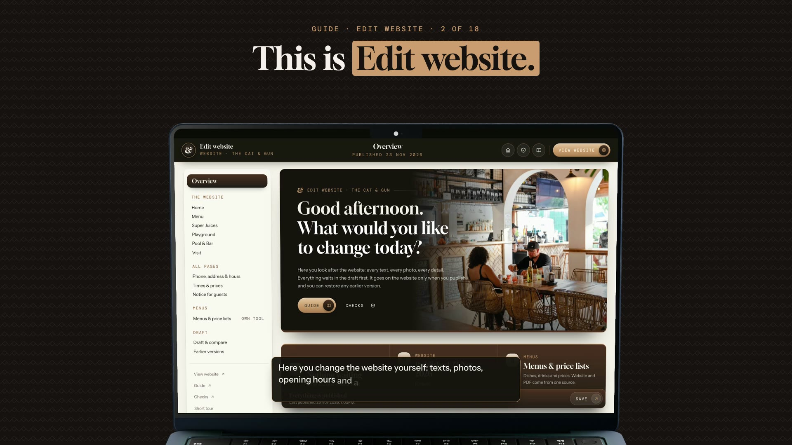

The website
Six pages with the photos, sentences and menu of the house, changed in Edit website.
The website has six pages: Home, Menu, Super Juices, Playground, Pool & Bar and Visit. Every page works on a phone and on a computer.
Texts, photos, opening hours and a notice for guests are changed in Edit website. Dishes, drinks and prices come from Menus & price lists.
Change it once, every page follows
Phone, address and opening hours are kept in one place.
Phone, address & hours
 7AM – 10PM
7AM – 10PM
7AM – 10PM 7AM – 10PM
7AM – 10PM
7AM – 10PM 7AM – 10PM
7AM – 10PMOne entry in Edit website, six pages of the website.
Guides and lessons
1 guide, 1 ready · 1 lesson.

Edit website
Texts, photos, opening hours and a notice for guests on the six pages of the website. Nothing goes online before you publish it.

How the website is built
Six pages, made from finished files, with the photos, sentences and menu of The Cat & Gun.
What Edit website can do
Every function, area by area. Open a drawer; its picture plays that part of the guide.
Edit website
With «Edit website» you keep the website of The Cat & Gun up to date yourself: texts, photos, phone, address, opening hours and a notice for guests.
01The OverviewThe Overview is the start page of the tool.6 functions
- At the top it shows if something is waiting in the draft and when the website was last published.
- Below that are the jobs that come up most often («Often used»).
- At the bottom every page of the website stands as a card with a photo: Home, Menu, Super Juices, Playground, Pool & Bar and Visit.
- A card leads to «Menus & price lists».
- On the left are the same pages, plus «Phone, address & hours», «Times & prices», «Notice for guests», «Draft & compare» and «Earlier versions».
- On the phone, «Sections» at the top opens this list.
02Change a textTexts are changed right next to the page as guests see it.8 functions
- Choose a page. On the right is the page the way guests see it.
- Click the text you want to change. A field opens on the left, and the page on the right changes as you type.
- The search field shows only the lines with the word you type.
- If the same text is on several pages, the field offers to change it in all spots.
- «As built» brings back the original text.
- A whole section can be hidden and shown again later.
- The page can be shown the way guests see it on a phone.
- Dishes, drinks and prices on the Menu page are locked here. You change them in «Menus & price lists».
03Change a photoClick a photo on the page to swap it.4 functions
- You can choose from all photos of the website.
- «Upload» adds a new photo: at least 900 pixels wide, at most 25 MB, as JPG, PNG or WebP.
- The tool makes the sizes for computer and phone.
- Screen readers and search engines read the photo description. Write one sentence about what is in the photo.
04Phone, address & hoursDetails that appear on many pages are kept in one place.5 functions
- «Phone, address & hours» lists every such detail, and how often and on how many pages it appears.
- You change it once, and it is new everywhere, also in the link to call from a phone.
- «Where exactly?» lists each spot.
- Other times, sizes and durations are under «Times & prices».
- Prices come from «Menus & price lists».
05Notice for guestsA notice shows at the top of every page.4 functions
- Under «Notice for guests» you write one or two sentences, for example when you are closed for a day.
- You can switch the notice on and off and add a link.
- With a start and an end date, the notice shows and goes away by itself.
- With empty dates, it shows from now on until you switch it off.
06Save, compare, publishNothing goes online by itself. What you save waits in the draft until you publish it.6 functions
- As long as something is not saved, the bar at the bottom says so and «Save» lights up.
- After saving, a short message shows with «Before/After» and «Undo».
- Shortcut: Cmd + S on a Mac, Ctrl + S on Windows.
- «Draft & compare» shows every change with the old and the new wording. You can undo each one by itself.
- «Publish» puts the draft on the website, texts and photos together, with a short note for the earlier versions.
- When it is done, the bar says «Everything is published».
07Earlier versionsEvery publish is kept.3 functions
- «Earlier versions» lists every publish with its date and note.
- «Restore» puts that version in the draft.
- It goes on the website only when you publish again.
08When something goes wrongEvery message leads to help.5 functions
- Every message has a «What to do?» button. It opens the checks page.
- The checks page works even when the tool itself does not start.
- It tells you what is wrong and what to do.
- What you saved is never lost.
- «Short tour» shows where things are.
Changing the website
For a change on the website, this order works:
Search the page for a word to find the line you want to change.
Click the text in the list and type. The page next to it changes as you type.
Look at the page as guests see it on a phone before you save.
Save, check Before / after, then publish with a note.
What you know now
The website has six pages.
Texts, photos and hours are changed in Edit website.
Dishes and prices come from Menus & price lists.
A notice for guests has a start and an end date.